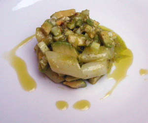

Opfinger Spargelsalat
5 von 6600 g Badischer Spargel al dente kochen, abtropfen und abkühlen. Je 2 El fein gehackte Haselnüsse, Pistazien und frischer Fenchel in eine Salatschüssel geben. Eine Avocado ebenfalls in kleine Würfel geschnitten mit dem Spargel in die Schüssel geben. Etwas Orangenschale, den Saft der Orange, einige EL Erdnussöl beigeben, alles vermengen. Mit Salz, Pfeffer und falls nicht genung Säure mit etwas Essig abschmecken.
